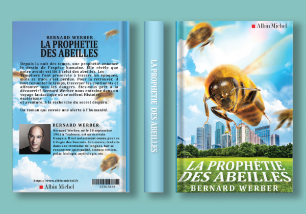
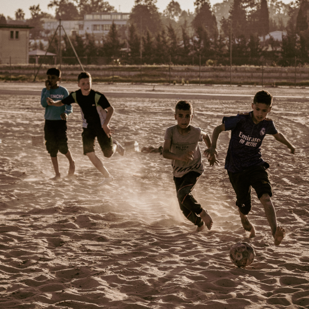
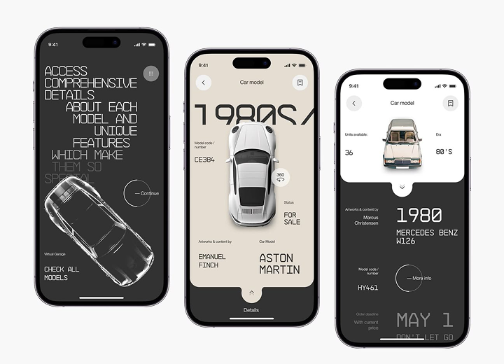
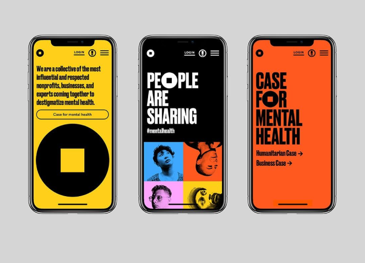

About Me
Wass is a visual artist and graphic designer working across print and digital media. Originally from Algiers and trained at the École des Beaux-Arts d’Alger, I blend fine art sensitivity with modern design thinking.
Currently based in Paris, I’m pursuing a Master’s degree in Creation and Digital Publishing (CEN) at the University of Paris 8, after earning a Bachelor’s in Fine Arts. My work bridges traditional artistic practice and contemporary digital aesthetics, exploring how visual language evolves across mediums.

Graphic Design – Print & Digital
I create visual identities, editorial layouts, and communication materials that combine clarity, emotion, and aesthetic precision. From posters and branding to social media content, my approach balances conceptual depth with visual impact.
Art Practice – Drawing & Mixed Media
My artistic work spans drawing, illustration, and experimental compositions inspired by urban textures, memory, and cultural identity. Whether on paper or canvas, I explore how color, line, and gesture can express rhythm and silence.

Photography & Visual Experiments
Photography acts as a visual journal within my process—capturing spontaneous moments, textures, and human traces in urban environments. These images often inform my graphic and artistic projects, creating a dialogue between the real and the reimagined.
Digital Creation & UI/UX
Currently, I’m developing projects that intersect art and digital interfaces, integrating motion design, coding, and interactive composition. My focus lies in translating the tactile feel of art into digital experiences that remain human-centered and poetic.

